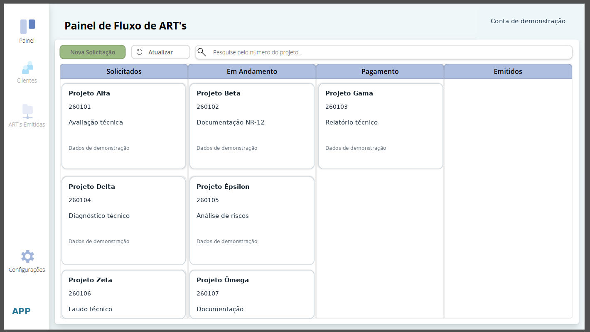

Power Platform / Aplicação profissional
Fluxo de ART
Uma interface de gestão visual para acompanhar a evolução das solicitações de documentação, do recebimento à emissão.
Telas e evidências
Capturas demonstrativas e evidências do projeto.

O desafio
As solicitações de ART precisavam de uma visualização centralizada, com identificação clara de pendências e do estágio de cada demanda.
O que desenvolvi
Criei um painel em colunas por etapa de atendimento, com cartões das solicitações, pesquisa por projeto e opções de consulta e atualização.
O que o projeto demonstra
- Etapas: Solicitados, Em Andamento, Pagamento e Emitidos.
- Busca por número de projeto.
- Cartões com informações principais de cada solicitação.
- Consulta e atualização a partir da interface.
A imagem foi preparada com registros demonstrativos. A interface apresentada não expõe a base operacional.